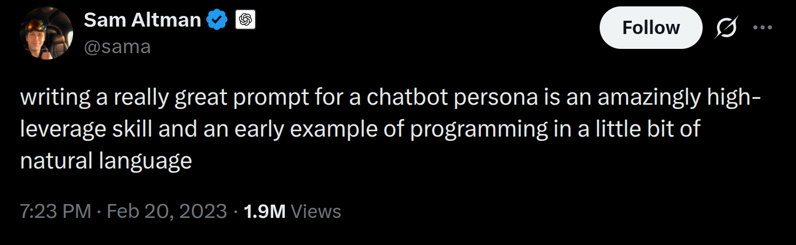

O Custo Oculto da IA:
A Ilusão do Código Rápido e a Realidade da Engenharia.
O que as redes sociais não te contam sobre o mercado, por que digitar código rápido não significa entregar software e o que você precisa dominar para não ser substituído.
Minha Trajetória & Trincheiras
Eu estive exatamente onde vocês estão hoje. Antes de falar de mercado, um pouco das trincheiras de onde eu vim:
O Lado Oculto da TI: Burnout & Meu TCC
A internet vende que trabalhar com tecnologia é só glamour, salário em dólar e home office. Mas ninguém te avisa que essa é uma das áreas com maior índice de ansiedade e esgotamento do mundo.
O jogo traduzia a pressão de prazos surreais, a sensação de nunca saber o suficiente e o medo constante de ficar pra trás.
O QUE A IA FEZ COM ISSO: Disseram que a IA traria paz. Na prática, gerou mais cobrança: pressão pra entregar 3x mais rápido e o medo constante de ser descartado.
A Ilusão da "Programação em Inglês"

O Estudo de Harvard: 445 Milhões de Eventos
Fiona Chen & James Stratton (Harvard University, 2026) analisaram 720.542 engenheiros em 655 empresas monitorando GitHub, Jira e Calendário.
"A IA aumenta muito a geração de código, mas tem efeito quase NULO na entrega final de software. O gargalo virou a revisão humana."
Onde a Conta Chega: +56% de Espera
• Tempo até aprovar subiu +56.1% | Pedidos de correção aumentaram +38.6%.
• A maioria das empresas já usa IA pra tentar revisar código, mas ainda depende de um dev sênior humano pra dar o ok final, porque a IA aprova código quebrado sem entender as regras do negócio.
Código Descartável: O Efeito Churn
A IA tem preguiça de entender o projeto: em vez de refatorar e reaproveitar código que já tá pronto, ela cospe funções duplicadas. Gerar 200 linhas em 10 segundos pra ter que apagar tudo na semana seguinte não é produtividade; é retrabalho automatizado.
Pergunta: Quanto tempo do dia um dev passa digitando código?
Se o seu trabalho de 8 horas por dia como programador começou agora... quanto tempo você gasta digitando código de verdade?
A Hipocrisia dos Datacenters
"É péssimo ter a limitada DRAM do mundo parada no computador das pessoas sendo usada só 5% do tempo. Você quer utilização máxima no datacenter."
Enquanto dizem que rodar modelos no seu computador é 'desperdício de memória', datacenters drenam redes elétricas de cidades inteiras e queimam megawatts pra sustentar código redundante na nuvem.
Mas afinal... Como Isso Afeta Vocês?
Vocês tão no ensino médio/técnico. O que essa briga de empresas trilionárias tem a ver com a sua aula de amanhã ou o seu primeiro estágio?
Terceirização do Cérebro & Deep Scrolling
Aprender a programar nunca foi sobre decorar comando; é sobre treinar o cérebro pra aguentar raciocinar sob pressão.
A gente se acostumou com respostas em 3 segundos. Quando um bug exige 2 horas de silêncio lendo documentação, a cabeça ferve e a gente desiste.
# Num mundo onde todo mundo tem atenção de 15 segundos, o estudante que consegue sentar e focar por 2 horas vira um diferencial raro no mercado.
Jogo Rápido: Quantas Dessas Palavras Vocês Conhecem?
Olhem pra tela agora: quem aqui saberia explicar em voz alta o que significa cada um desses conceitos que governam sistemas reais?
1. Estruturas de Dados: Filas & Pilhas
Esses conceitos não tão na aula só pra encher o saco; eles seguram sistemas do tamanho do Nubank, Instagram e iFood.
2. A Física do Sistema: Concorrência vs. Paralelismo
O motivo clássico de incidentes graves de madrugada em bancos e corretoras:
3. Estabilidade Real: Idempotência & Observabilidade
Se você souber explicar essas duas palavras numa entrevista de estágio, você passa na frente da concorrência:
A IA Gerou esse Código em Python. Você Aprovaria?
Sintaxe limpa, sem erro de compilação. Mas tem uma falha grotesca de dinheiro sumindo. Quem acha primeiro?
remetente = db.buscar_usuario(remetente_id)
if remetente['saldo'] >= valor:
# ⚠️ A IA envia o Pix pelo Banco Central antes de salvar no banco!
banco_central.enviar_pix(destinatario_id, valor)
db.atualizar_saldo(remetente_id, remetente['saldo'] - valor)
# Falta de Transação Atômica (ACID). A IA não liga pro rombo financeiro; quem tem que ver isso é o dev!
De Quem é a Culpa às 3h da Manhã?
[ VIBE CODING ]
- "Funcionou na minha máquina"
- Copiar, colar e torcer
- Zero testes de carga ou limites
- "A culpa foi do modelo..."
[ ENGENHARIA REAL ]
- Como isso escala e falha seguro?
- Observabilidade, logs e métricas
- Filas, idempotência e isolamento
- Quem assinou o commit responde
O Caso Air Canada & O Risco da Alucinação
"A Justiça condenou a companhia aérea: a empresa é 100% responsável pelo que a IA fala e promete no sistema dela."
A IA inventa nomes de pacotes que não existem (ex:
import super_auth_jwt). Hackers descobrem e sobem vírus com esses mesmos nomes no NPM/PyPI.# Se você dá 'pip install' sem checar o GitHub oficial, você acabou de abrir as portas pra invadirem a empresa.
O Efeito Alavanca: O Dev de 10x Existe?
Esqueça o papo furado de que a IA vai acabar com os salários. A realidade de mercado é uma questão pura de alavancagem técnica:
1. O Usuário de Prompt: Trata a IA como muleta. Produz código quebrado em alta velocidade, não sabe resolver incidentes e disputa salário baixo com centenas de outros copiadores.
2. O Engenheiro com IA: Trata a IA como multiplicador de força. Constrói arquitetura sólida, audita código e usa a IA para automatizar tarefas mecânicas.
A REGRA DE OURO: A IA não veio para roubar seu trampo; quem vai disputar a vaga com você é o engenheiro que sabe pilotar a máquina com domínio técnico!
O que Ler pra Superar o Hype
Enquanto a maioria se contenta em ver tutoriais rasos de 1 minuto, esses livros constroem carreiras sólidas:
Como Usar a IA Sem Virar Refém Dela
O segredo não é proibir a IA, mas mudar o papel dela nos seus estudos e projetos:
O que o Mercado Cobra no Primeiro Emprego?
- Leitura Crítica de Código Alheio: Como o paper de Harvard mostrou, a fila de revisão entupiu (+59%). Saber ler e auditar código vale mais do que digitar rápido.
- Fundamentos Sólidos: Entender filas, conexões de rede, HTTP e banco de dados relacional. É isso que segura o sistema em pé.
- Resolver Problemas Reais: Nenhuma empresa te paga só pra programar; te pagam pra resolver uma dor de negócio com segurança.
Use a IA como um Motor a Jato.
"Mas lembre-se: um motor a jato instalado numa bicicleta sem freios só mata o piloto muito mais rápido."
Regra de ouro: Nunca coloque em produção uma linha de código que você não seria capaz de explicar às 3h da manhã durante um incidente.
Bora Conectar & Trocar Ideia
Se você travou em algum código, quer tirar dúvidas sobre carreira ou debater sobre o futuro da engenharia, me dá um alô: